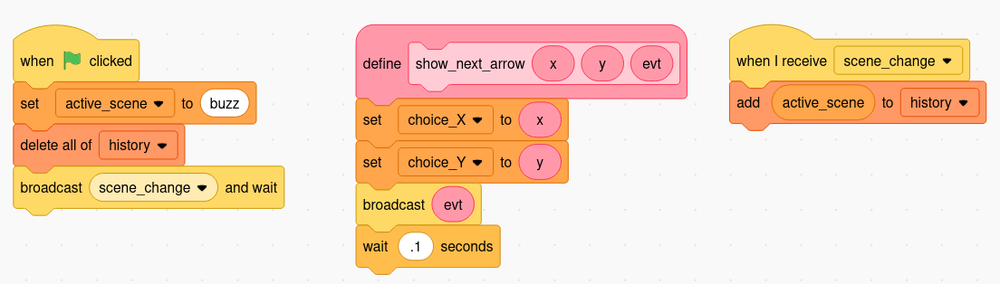

MIXI Story Game System
The MIXI Story Game System is a Scratch platform/starter template to make it easier to create interactive fiction, visual novels, and other story games.

Key Concepts
The game is organized into scenes represented by Scratch sprites. Pages written as SVG in Scratch costumes, and events which communicate changes between scenes.
A central controller sprite manages the game state such as the history of visited scenes, and initial starting state. It can be modified to include features such as score, inventory, health/life, or other game state.
A number of “standard” sprites are part of the platform, which make include a “next page” button, and four “choice” buttons [A, B, C, D].
Variables
Global variables, shared across sprites, keep track of the game state and allow communication (working with events) between sprites. The following variables are part of the core system:
active_scene- the name of the current scenechoice_A_scene- switch to this scene if the choice A button is clickedchoice_B_scene- switch to this scene if the choice B button is clickedchoice_C_scene- switch to this scene if the choice C button is clickedchoice_D_scene- switch to this scene if the choice D button is clickedchoice_X- thexcoordinate to position the next button displayedchoice_Y- theycoordinate to position the next button displayedhelp_topic- the name of the help page to display if the help scene is shownhistory- a list of visited scenes, useful for back buttons, breadcrumbs, and to see if a scene has been visited
Game Sprites
Game sprites are spites that are not scenes, typically they are buttons or other interactive elements that can be re-used across scenes. These helper sprites hide themselves on scene changes and wait for “show” events to make themselves visible again.
controller- manages the game state and eventsgrid-overlay- a sprite to help position elements on the stage (not used in-game)next_page- a button to move to the next page within a scenechoice_A- the button to select choice Achoice_B- the button to select choice Bchoice_C- the button to select choice Cchoice_D- the button to select choice Dhelp- a special scene that can contain help pages (help is not recorded inhistory)close_help- a button to close the help page and go to the previous scene
** Note: “Buttons” are named with underscores to distinguish them from scenes.
Events
Game sprites are spites that are not scenes, typically they are buttons or other interactive elements that can be re-used across scenes.
go_next- triggers/listens for the next page event; broadcast by the click-event on thenext_pagespriteshow_next_page- mark thenext_pagesprite as visiblehide_next_page- mark thenext_pagesprite as hiddenshow_choice_A- mark thechoice_Asprite as visibleshow_choice_B- mark thechoice_Bsprite as visibleshow_choice_C- mark thechoice_Csprite as visibleshow_choice_D- mark thechoice_Dsprite as visible
** Note: “Buttons” are named with underscores to distinguish them from scenes.
Function(s)
Currently, there is only one helper function in the system.
show_next_arrow
This function is used to show a next scene button (choice_A, choice_B, choice_C, choice_D).
When it is called, it sets global variables to position the button, and then
uses a function parameter to determine which button should reveal itself.
Parameters:
x- thexcoordinate to position the next button displayedy- theycoordinate to position the next button displayedevt- the name of the button event to broadcast, choices are [show_choice_A,show_choice_B,show_choice_C,show_choice_D]
Functions in Scratch can only belong to a single sprite, so this function must be duplicated with a sprite, or it can be copied from the controller using Scratch’s “backpack” feature. The code and usage for this function are shown below in the “changing scenes” recipe.
Recipes
Creating a new scene
① ② ③ ④ ⑤ ⑥ ⑦ ⑧ ⑨ ⑩
Scenes can be created from scratch by creating a new sprite or (more easily) by duplicating an existing scene sprite. Things to keep in mind when creating a new scene
Name the sprite with a short, descriptive name for the scene. The example story users all lowercase names with hyphens to separate words. “scene-1” is not a good name – the name should describe the scene. “forest-clearing” is a better name, for example.
Set x and y to zero. When duplicating sprites, they may be offset from
the center. Make sure that the sprite is at the center of the stage. This
will make it easer to line up your text and other elements. Your probably want
to hide it, too.
② `x` and `y` are set to zero;
③ the sprite is hidden by default.
Hide the scene on start. Add an “on start” block that hides the scence. The controller will signal when the first scene should be shown.
Add a scene_change listener that listens for the scene_change message.
scence_change is the core event that lets the system know when to switch
scenes. When receiving this event, the sprite shows itself if its name
matches the active_scene global variable, otherwise it hides itself
because it’s inactive. This is the place to add transition effects,
background music, sound effects, and other elements that signal a scene
change.
Add a go_next listener that listens for the go_next message.
Like the scene_change event, this block should check to see if
it’s the active scene, and then advance to the next page. This is only
necessary for scenes that have multiple pages of text/story.
Changing scenes
② call the `show_next_arrow` to position and activate the buttons;
③ the function definition for `show_next_arrow` (you don't have to change this).
The code snippet above shows how to add to choices to a scene (A and B). The
four statements labeled ① and ② should happen in the scence_change event
listener if there is only one page or the choices are active throughout
the scene. If the choices only appear on a specific page of the scene,
those statements must get executed in the go_next event listener.
Iterating through pages
It is a common pattern for a scene to have several story pages which
culminate in a page with choices. This is coded in the go_next event
listener. This recipe declares a local variable (a variable
only visible to the sprite) called page_num which keeps track
of the current page. The next_page arrow is displayed on each
page except for the last page (determined by an if block
which checks page_num).
② show `next_page` button at the bottom of the first page;
③ when `go_next` is triggered, advance to to the next costume (i.e. page) and increment (add one to) `page_num`;
④ if `page_num` is equal to the last page (4 in this case), then show the choices to choose the next scene;
⑤ if `page_num` is not the last page, then show the `next_page` button.